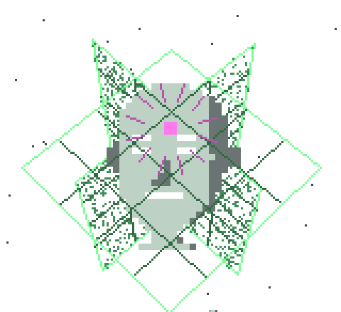
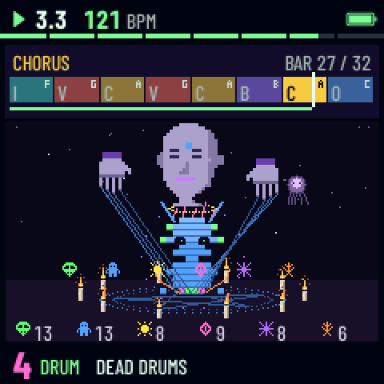
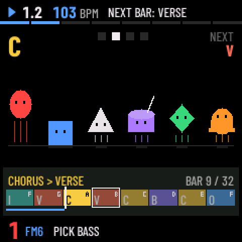

CONSCIOUSNESS ENERGY GRID
VALLÉE



Getting around
tap HOMEHOME: the tape deck and the six tracks.
tap HOME on HOMETHE SPELL: the song's map and the Alchemist. Tap again for the tracks.
hold HOMESHIFT. Its map shows what every control does on this page.
hold + release HOMEMENU. ALGORITHM picks the tab, PRESETS the row, any knob the value.
turn ALGORITHMPicks the track (1–6) on every page.
tap a page buttonOpens its pages; again (or SELECT) for the next one.
OCT+ / OCT−On action pages and dialogs: do it / go back.
any buttonSkips the intro at power-on (MENU › DISPLAY › ANIM OFF: no intro).
GEN the song generator
turn SELECT → on HOMEOpens GEN. (BPM LOCK off: SHIFT + SELECT.)
SELECTIts four knob pages. Back past page 1: HOME.
PRESETSSTYLE, always.
OCT+Writes it into the tracks.
OCT+ againUntouched: the next seed. Turn one knob first: the same piece with only that changed.
OCT−Puts back what the tracks held before (steps, sounds, tempo).
hold SAVELater: undoes GEN a track at a time.
| KNOB 1 | KNOB 2 | KNOB 3 | KNOB 4 | |
|---|---|---|---|---|
| 1 | STYLE | SEED | VIBE | ENERGY |
| 2 | PART | KEY | TEMPO | SOUNDS |
| 3 | DRUMS | BASS | KEYS | LEAD |
| 4 | COLOR | COMPLEX | SWING | HUMAN |
PART › SONG: one press writes INTRO, VERSE, CHORUS, BRIDGE, OUTRO as a whole song (uses 30 patterns). SOUNDS › KEEP: notes only, your sounds stay. Roles OFF leave a track as it is. Tracks: T1 bass · T2 keys · T3 lead · T4 drums · T5 color · T6 perc.
AETHER psych pop
LOTUS slacker jazz-pop
ZETA French house
ORACLE glitch electronics
AKASHA ambient
SIGIL jazz-funk
LEMURIA yacht rock
ASTRAL sad synth-pop
HEX garage rock
OBELISK motorik
SERAPH 80s soul
WRAITH warped 80s
VIBE: DARK · HAZY · WARM · BRIGHT · WEIRD. ENERGY sets tempo, drum density and fills.
THE SPELL perform the song
On THE SPELL the white keys are the song's blocks in order, from the left (a GEN song shown). Black: the performance, the same in every octave.
FINTRO
GVERSE
ACHORUS
BVERSE
CCHORUS
DBRIDGE
ECHORUS
FOUTRO
F#DROP
G#NEXT
A#TAKE
C#TAKE 1
D#REC
white keyEvery track jumps to that block on the next bar; its key again: that block again.
top G (far right)Held: its effect, like an FX key; so is every white key past the song's blocks. Each set on MENU › FX.
F#Drops a jump that hasn't come in yet.
G#The next part of the song.
A#A new take of the part playing: GEN writes it again, live, in on a bar line. Same key, chords and sounds.
C#A new take of the selected track only (ALGORITHM picks it).
D#REC ARRANGE: play the parts in your order, D# again: that is the song now. SHIFT + D#: as before.
Stopped, a white key moves the song there and PLAY starts from it. New takes: songs GEN wrote this session.
Looks
MENU › DISPLAY › THEMEXENO: tape deck, a creature for every sound, THE SPELL. TEEN: an OP-1 style tape machine, big track names, a band of six toys that jump to the song on HOME on HOME.
turn PRESETS on HOMEA box shows the new sound: its creature (XENO) or its name big (TEEN).
Creature families by track: 1 green aliens · 2 blue cryptids · 3 yellow psi orbs · 4 pink crystals · 5 purple sigils · 6 orange herbs.
Share a song
Pass on the style, the vibe and the seed, plus the coloured line under them on GEN: the knobs you changed, e.g. E80 X40. The same settings write the same song on any Vallée.
Patterns full?
The 64 patterns are shared by the whole unit, and saved projects keep theirs. The message's second line says who holds them (SAVED SLOT 1:30 = slot 1 holds 30). Delete a saved project you don't need on SAVE › PROJECT KNOB 2 DELETE, then press GEN again.
ALEMBIC GLO › ALEMBIC: the whole mix
DRIVE SOFT · HARD · FOLD · FUZZ → MOTION PHASR · FLANG · CHOR · WOBBL → SPACE ECHO · VERB · BOTH → GRAIN WOW · DUST · CRUSH · FILTR. Knobs 1, 3: flavour; 2, 4: BLEND (0 = off).